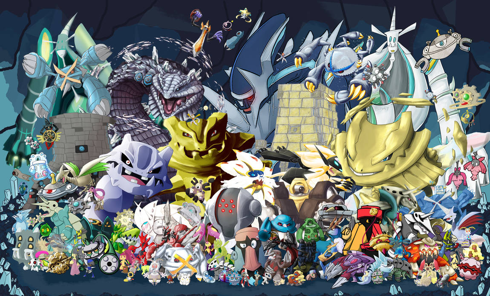

Steel-Type Pokemon
Steel-type Pokémon, renowned for their formidable defenses and industrial strength, epitomize resilience and durability in the Pokémon world. These metallic creatures, often forged from steel alloys or possessing bodies of iron, excel in both offensive and defensive capabilities, making them sought-after companions for trainers seeking unwavering reliability in battle. Among the most iconic of Steel-types is the legendary Pokémon Steelix, a towering serpent-like creature whose body is encased in hardened steel. With a mighty jaw capable of crushing boulders and a formidable array of metallic scales, Steelix strikes fear into the hearts of opponents as it tunnels through the earth with ease, leaving destruction in its wake. Another notable Steel-type Pokémon is the majestic Metagross, a mechanical marvel with a body comprised of interconnected steel plates. Possessing exceptional intelligence and unparalleled psychic powers, Metagross is a force to be reckoned with on the battlefield. Its four powerful legs allow it to traverse any terrain with ease, while its psychic abilities enable it to manipulate objects and opponents alike with incredible precision. Trainers who earn the loyalty of a Metagross find themselves with a steadfast ally capable of overcoming even the most daunting challenges. In addition to their raw power, Steel-type Pokémon are known for their resilience to a wide range of attacks, including those of the Normal, Grass, Ice, Flying, Psychic, Bug, Dragon, Fairy, and Poison types. This defensive prowess, combined with their offensive capabilities against Fairy, Ice, Rock, and Steel types, makes them formidable opponents in battle. However, they do have weaknesses to Fire, Fighting, and Ground-type attacks, requiring trainers to strategize carefully to mitigate these vulnerabilities. Despite their imposing presence and unmatched strength, Steel-type Pokémon are not without their softer sides. Pokémon like Lucario, with its unwavering loyalty and sense of justice, and Mawile, with its endearing appearance and cunning nature, remind trainers that beneath their metallic exteriors lies a heart of gold. Whether forging bonds with their trainers or facing down formidable opponents, Steel-type Pokémon continue to inspire awe and admiration, proving themselves to be invaluable allies in the ongoing quest to become Pokémon champions.
